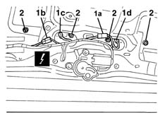
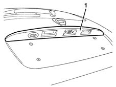

7015B30 exterior handle or block support - r+r with panel/protection removed
- Path
- Procedures > 70 FITTINGS > 7015 TAILGATE/ > 7015B tailgate locking/opening devices > 7015B30 exterior handle or block support - r+r with panel/protection removed
- Kind
- repair procedure (removal / refitting; the operation number is the code)
- Applies to
- all engines; all production periods
- Interactive page
- https://sloeber94.github.io/elrnDB-lYpsln/en/#/2429538
Applies to: all engines; all production periods
 Removing
Removing
 Refitting
Refitting1. Disconnect electrical connections (1a), (1b), (1c).
 | Name | Connector |
|---|---|---|
1a | Switch on boot outer handle |
| Name | Connector |
|---|---|---|
1b | Switch on boot outer handle |
| Name | Connector |
|---|---|---|
1c | Left number plate light |
| Name | Connector |
|---|---|---|
1d | Right number plate lgiht |
2. Unscrew the nuts.

Applies to: all engines; all production periods
1. Working from the outside of the tailgate, remove the handle.

Applies to: all engines; all production periods
5540A94 l/h or r/h number plate light (one) - r+r (left and right sides), if necessary.
5540A94 l/h or r/h number plate light (one) - r+r (left and right sides), if necessary.
7015B48 Tailgate OPENING CONTROL - R.R. (centre and left), if necessary.
Applies to: all engines; all production periods
Refitting
RemovingCheck that the handle assembly is not damaged.
7015B48 Tailgate OPENING CONTROL - R.R.
5540A94 l/h or r/h number plate light (one) - r+r
5540A94 l/h or r/h number plate light (one) - r+r
Position the handle and secure it using the nuts.
Connect the electrical connections .
Topics linked from this page (6)
- 5540A94 l/h or r/h number plate light (one) - r+r
- 7015B48 Tailgate OPENING CONTROL - R.R.
- F50 Left number plate light
- F51 Right number plate lgiht
- I33A Switch on boot outer handle ( REAR )
- I33B Switch on boot outer handle ( REAR )